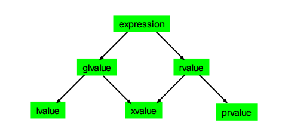

C++11 value category
唔...这个话题试着写写。如有错误欢迎指正。
我以前觉得这个话题实在太难理解了，感觉这一切都是那些数学家/语言学家弄出来的鸡肋，但是后来换了一种思路之后就发现一切都变得豁然开朗了：先大概了解它是什么，然后为什么发生(存在)，然后再回头想想它是什么。
C++11 value category什么是 C++11 的 value category为什么需要那么复杂的 Value Category什么是 C++11 的 Value CategoryReferences
什么是 C++11 的 value category
众所周知 C++ 继承自C语言，C语言里面有 lvalue 和 rvalue 之分，所以 C++ 里面也有一模一样的 lvalue 和 rvalue。简单点来说，能够被取地址的表达式就是 lvalue。C++多了引用(reference)这个东西，所以在C++里面，对 lvalue 的引用也是左值。其他的都是右值。这就是 C++11 之前的 value category，和 C 语言一脉相承。
但是到了 C++11 就不一样了，因为 C++11 引入"移动语义"，也就是 std::move()所要实现的东西。移动语义是什么呢？
举个例子：在 C 类语言里面，如果要将一个变量a的值赋给同一类型的变量b，要怎么做？答案是 b = a。在 C 语言里面，这个操作就是一个简单的 copy，即将一些内容简单地从某个内存地址复制到另一个内存地址。在 C++ 里面，由于可以重载(overload) = 这个操作符，所以不只是简单 copy ，还可以做各种各样的操作。但是归根结底，无论如何你都要将一些东西从内存的某个地方复制到另一个地方(除非你用指针或者引用，就可以避免复制，但是我们不讨论使用指针或引用的情况)。大体上这个过程如图所示：

可是如果使用 C++11 的移动语义，就会是这样的情况:

这就是 C++11 的移动语义。有了移动语义之后，C++ 的 Value Category 就变得没那么简单了，现在 C++ 的 Value Cateogry 包括了 rvalue 、lvalue 、xvalue 、glvalue 、prvalue 这五种。
为什么需要那么复杂的 Value Category
来看一个例子，就知道 C++ 标准委员会的各位之所以会引入这么复杂的 Value Category 并不是为了炫耀他们的逻辑，而是为了 C++ 语言的完备性。这个例子引自这个SO 。
xSomeType &&Func() { ... }SomeType &&val = Func();SomeType someVal{Func()};SomeType otherVal{val};假设现在没有上面提到的五种 value category。那么，按照 C++ 右值引用的用法，倒数第二行和最后一行代码都会触发一个 move ，因为现在将一个 rvalue reference 传给 SomeType的构造函数，这个 rvalue reference 会引发 SomeType的 move constructor 。这是显然的。问题是，在最后一行代码里，你的本意并不是要 move 它，否则你不会给它一个名字的。换句话说val 并不是一个 temporary object ，即使它是一个 rvalue reference （SomeType&&）。实际上，倒数第二行会引发 move 但是最后一行并不会。
好了，Func()的类型是 SomeType&& 可以 move， val 的类型也是 SomeType&& 却不能 move ，那么什么时候才能 move ？ 前者是 unnamed rvalue reference ，后者是 named rvalue reference ，难道说前者能 move 后者不能？这个怎么解释？
一个解释是，我们可以说otherVal有了名字(named rvalue reference)，所以是个左值(lvalue)，虽然说这个左值的类型(type)是rvalue reference，但是我们左值是当然不能触发上面的 move constructor 的。
这样一来，上面的 unnamed rvalue reference ( Func() 这个表达式 ) 是什么值呢？首先显然它不是左值。它是传统意义上的右值吗？不是。一个简单的原因是，它可以被放在一个赋值表达式的左边，所以它不是右值，至少不是传统意义上的右值。比如一个实例：
xxxxxxxxxxint main(){ std::vector<int> v1, v2; std::move(v1) = v2; // `std::move(v1)` 就是一个 xvalue}上面的std::move(v1)这个表达式和上面的Func()这个表达式是一样的，都返回一个 T&& 。它可以被放在赋值表达式的左边。
那么，像这种由函数返回的 SomeType&& 既不是左值又不是右值，它应该属于什么值呢？C++11 的标准里面给它起的名字是 xvalue 。这个 xvalue 里面的 x 可以理解为 eXpiring ，也就是将会"过期"、可以被 move 的。
什么是 C++11 的 Value Category
对 rvalue 、lvalue 、xvalue 、glvalue 、prvalue 这五个术语的解释最清楚的莫过于 Bjarne Stroustrup 的这篇东西了。在里面， Bjarne Stroustrup 等标准委员会成员提出了几点原则，然后根据这些原则去命名各种 value。
首先，他们提出了各种 value 都包含的、互相正交的两种属性：
- “has identity” – i.e. and address, a pointer, the user can determine whether two copies are identical, etc.
- “can be moved from” – i.e. we are allowed to leave to source of a “copy” in some indeterminate, but valid state
然后他们用 i 来代表 has identity ，I 代表 does not has identity ，用 m 来代表 can be moved from ，M 代表 can not be moved from 。
然后，有两点原则必须要遵循：
- Every value is either an lvalue or an rvalue
- An lvalue is not an rvalue and an rvalue is not an lvalue
在这个基础上，他们提议这样表示各种 value 之间的关系：

见名思意，左上角的 i M 代表 has identity, cannot be moved from ，这种就是传统意义上的 lvalue (意思也一样)；右下角的 rvalue 代表 can be moved from ，是一种广义上的右值，我们称之为 rvalue ； 左下角的 i 代表 has identity, may or may not be moved from，是一种广义上的 lvalue， 我们称之为 generalized lvalue，简称 glvalue ；右上角的 I m 代表 does not have identity ，can be moved from ，这种就是传统意义上的 rvalue ，现在我们称之为 pure rvalue ，简称 prvalue ；中间的 i m 代表 has identity and can be moved from ，我们称之为 xvalue 。
他们之间的关系如下图所示[2]：

# 一个tips： 这里[4]提到用 C++ 模板和decltype来得到一条表达式的 value category，不妨一用 :)
References
Yubin Ruan, last modified in 2016-01-30
Comments powered by disqus